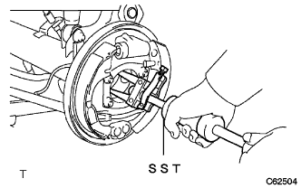
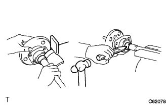
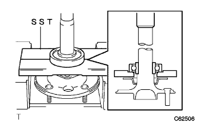

Remove the rear axle ASSY (4WD) |
| 1. Remove the rear tire |
| 2. Speed sensor RR LH separation |
Remove the bolt and separate the speed sensor RR LH.
| 3. Remove the rear brake drum |
Take off the rear brake drum.
| 4. Parking brake shoe strat set LH removed |
 |
Use SST to remove the strat set.
| 5. |
Remove the brake zeuling spring.
| 6. Remove the rear axle shaft |
 |
Remove the four nuts from the service hall and separate the bearing retainer OUT and bearing retainer gasket from the backing plate.
The bearing retainer OUT and the bearing retainer gasket are separated from the backing plate, and the backing plate is temporarily tightened with four nuts.
 |
Use SST to remove the axle shaft.
| 7. Remove the rear axle shaft oil seal |
|  |
Use SST to remove the oil seal.
| 8. Remove the rear axle housing end gasket removal |
Remove the four temporary nuts from the backing plate.
Remove four bolts while supporting the backing plate.
 |
Float the backing plate and remove the end gasket.
| 9. Remove the rear axles yaft inner tenalite |
|  |
Shave a part of the inalite with a grinder, and use tagane and hammer to remove it.
| 10. Remove the rear skid control rotor |
| 11. Remove the rear axles yaft bearing |
|  |
Use SST and press to remove the bearing.
Remove the bearing retainer gasket.
Remove the bearing retainer OUT.